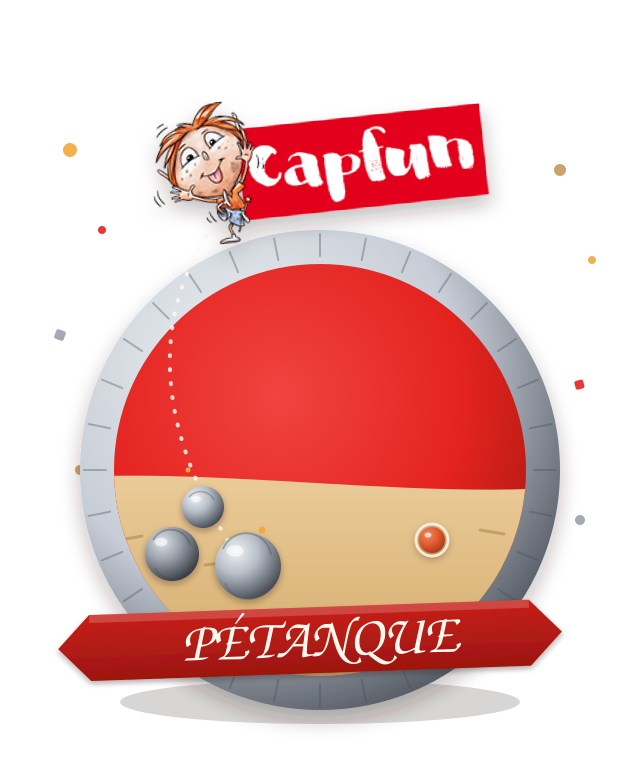
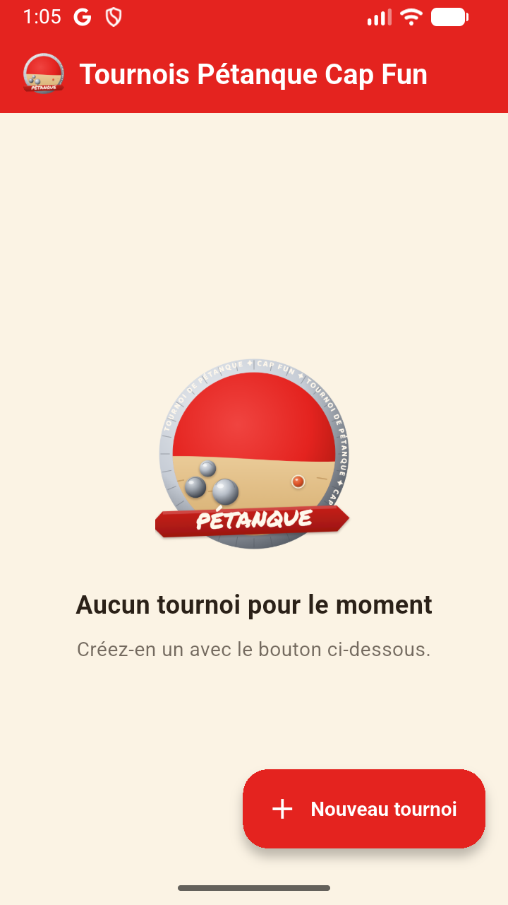
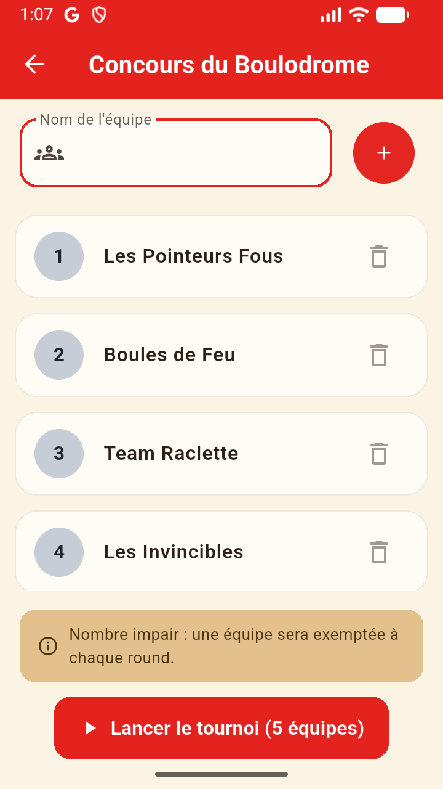
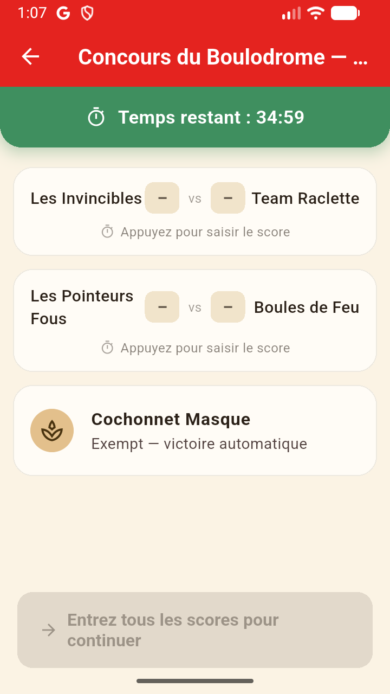
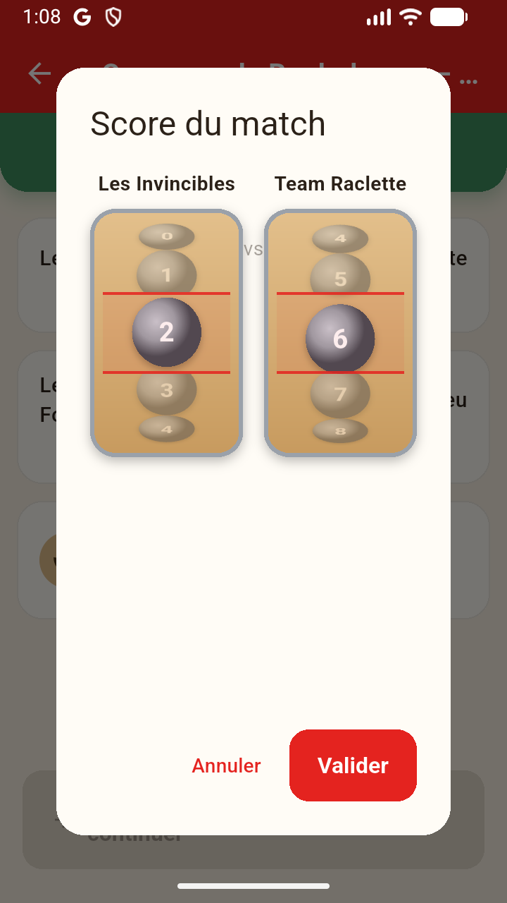
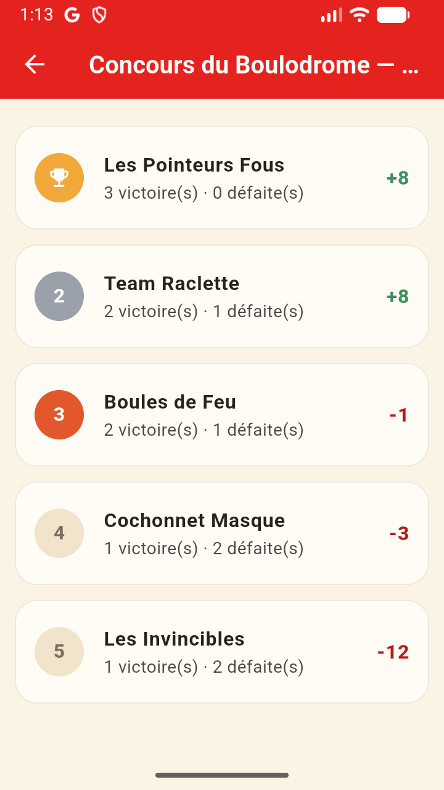

Cap Fun · Application mobile
Tournois de pétanque, sans prise de tête !
L'appli qui tire les équipes au sort, chronomètre les parties et calcule le classement — pendant que vous, vous jouez aux boules.
Comment ça marche
Inscription libre des équipes
Autant d'équipes que vous voulez. Nombre impair ? Pas de souci : une équipe se repose à chaque round, et jamais deux fois la même.
Round 1 — tirage au sort
Les premiers matchs sont tirés à l'aveugle, pour un départ 100% équitable.
Rounds 2 & 3 — les meilleurs contre les moins bons
Le classement du moment décide des matchs suivants, en évitant autant que possible de refaire jouer deux équipes qui se sont déjà affrontées.
Un chrono par partie
35 minutes par défaut (réglable), avec une alerte à 5 minutes puis un signal « dernière mène » à 2 minutes de la fin.
Le score à la roulette
Fini les fautes de frappe : on fait défiler une vraie roulette de boules pour choisir le score, de 0 à 13.
Podium automatique
Classement final calculé tout seul, avec médailles or, argent et bronze pour le trio de tête.
Aperçu

L'accueil, prêt à créer votre premier concours

Inscription des équipes — nombre impair géré automatiquement

Un round en cours, chrono et exemption compris

La roulette pour saisir le score, de 0 à 13

Le classement final et son podium
Builds & téléchargements
Chaque build est versionné et horodaté — le plus récent est toujours en haut.
Installer l'APK
L'application n'est pas encore sur le Play Store : installez le fichier APK directement.
- Téléchargez l'APK depuis la section Builds & téléchargements.
- Ouvrez le fichier sur votre appareil Android.
- Autorisez l'installation depuis des sources externes si demandé : Paramètres > Sécurité > Installer des applications inconnues.
- Acceptez l'installation et lancez l'application — le premier match n'attend que vous.
Utiliser la version web
Pas envie d'installer un APK ? L'appli tourne aussi directement dans le navigateur, sans rien installer.
- Ouvrir l'appli web — fonctionne sur ordinateur, tablette ou mobile.
- Les tournois sont sauvegardés dans le navigateur utilisé (pas de compte, pas de synchronisation entre appareils).
- Ajoutez la page à votre écran d'accueil pour un accès en un tap, comme une vraie appli.
Ajouter l'appli web à l'écran d'accueil
Sur iPhone comme sur Android, l'appli web peut s'installer comme une vraie icône, sans passer par un store.
📱 iPhone / iPad (Safari)
1. Ouvrez l'appli web dans Safari.
2. Appuyez sur le bouton Partager (le carré avec la flèche vers le haut).
3. Choisissez « Sur l'écran d'accueil ».
4. Validez avec « Ajouter ».
🤖 Android (Chrome)
1. Ouvrez l'appli web dans Chrome.
2. Appuyez sur le menu ⋮ en haut à droite.
3. Choisissez « Ajouter à l'écran d'accueil » (ou « Installer l'application »).
4. Validez avec « Ajouter » / « Installer ».
⚠️ Attention au vidage du cache
Les tournois en cours sont enregistrés uniquement dans le stockage du navigateur (ou de l'icône installée). Si vous videz le cache/les données du navigateur (ou de l'appli ajoutée à l'écran d'accueil), ou si vous la désinstallez, vos tournois en cours seront perdus. Évitez de « vider le cache » ou « effacer les données de navigation » de Safari/Chrome tant qu'un tournoi n'est pas terminé.
Mettre à jour cette page
Depuis la racine du projet, lancez :
docs/build_release.sh
Le script compile un APK release, le copie versionné dans docs/releases/ et régénère cette page automatiquement.
Une idée, une envie de fonctionnalité ?
Écris-moi :